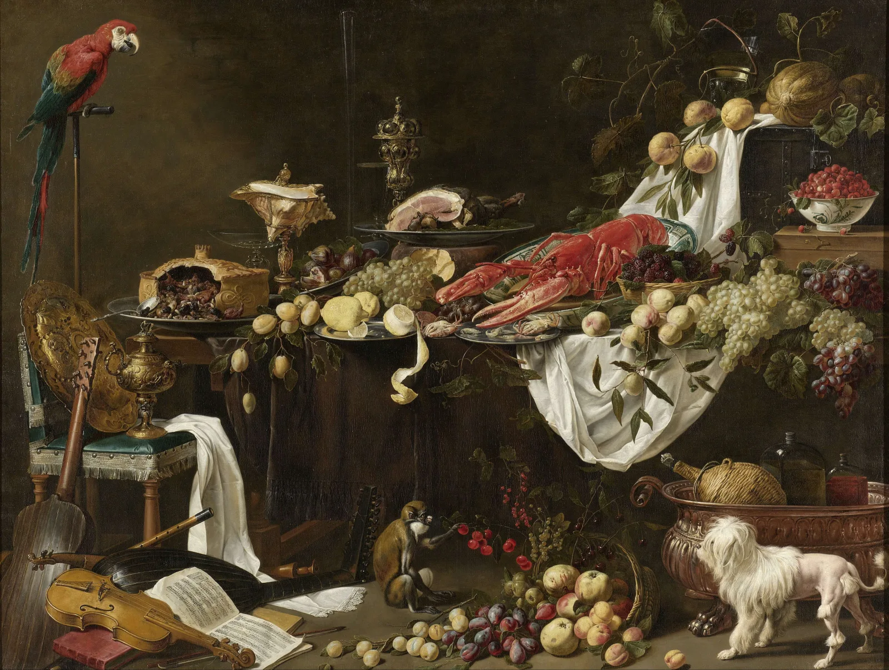
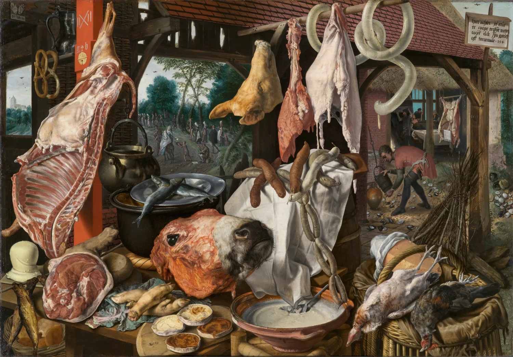
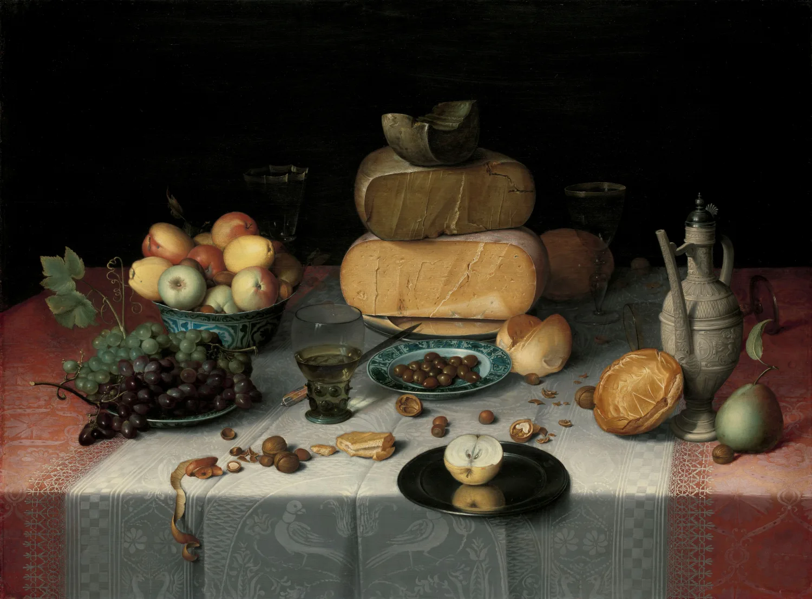
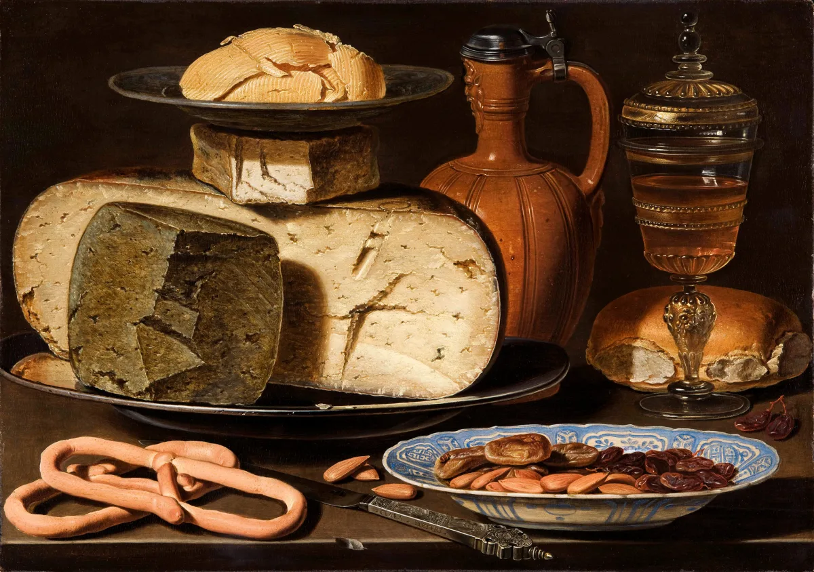

The short version
In a trial of 160 adults, Atkins, the Zone, Weight Watchers, and Ornish produced similar average weight loss after a year. The results ranged from about 5 to 7 pounds, with no statistically significant difference between diets. Adherence was much more closely associated with weight loss than the assigned diet. Dansinger 2005 good
This is the food companion to Big Enough, on muscle, and Still Moving, on movement. The comparisons below show what different menus changed in actual studies. The calculator gives rough planning estimates.
Six decisions that account for much of the practical advice below.
The protein figure comes from resistance-training studies. The fiber figures are age-based adequate-intake targets. Both are explained below.
Weight and health
Losing weight and reducing disease risk are related goals. A calorie deficit can lower weight; changing the foods within that calorie budget can also affect cholesterol, blood pressure, and appetite.
Energy balance
Over time, taking in less usable energy than you expend reduces the body's energy stores. But neither side of that equation stays fixed: hunger, movement, metabolism, and body size all change. Short-term scale changes also include water and the food in your gut. Energy balance is an accounting rule, not an explanation of why weight loss is easy or hard. Hall 2012 good
Protein takes more energy to process than fat or carbohydrate. A commonly cited estimate is 20 to 30 percent of protein's calories, compared with 0 to 3 percent for fat. Westerterp 2004 good Protein and resistance training can also help preserve lean tissue during weight loss. In one four-week trial of 40 young men on a large calorie deficit and an intensive exercise program, the higher-protein group gained more lean mass and lost more fat. The result came from high protein together with a demanding training program. Longland 2016 good
What counting can miss
Food records can miss a great deal. In a 1992 study, ten people with obesity who reported difficulty losing weight underreported their calorie intake by an average of 47 percent and overreported physical activity by 51 percent. Those figures describe a small, selected group, not the average person. Lichtman 1992 mixed A record of food intake is a measurement with error.
Exercise contributes to weight loss, though the result is often smaller than a simple calories-burned calculation predicts. The Hadza study found similar daily expenditure to Western comparison groups after accounting for body size; it did not show that adding exercise to an individual's life burns nothing. Pontzer 2012 mixed A review of randomized aerobic-exercise trials found reductions in weight and body fat as weekly exercise increased. Jayedi 2024 strong
Health beyond the scale
PREDIMED tested heart health rather than weight loss. It assigned 7,447 older adults at high cardiovascular risk to a Mediterranean diet supplemented with olive oil or nuts, or advice to reduce dietary fat. The rate of major cardiovascular events was about 30 percent lower in the Mediterranean groups over nearly five years. The original report was retracted after randomization problems were found; the revised analysis still supported the benefit. Estruch 2018 good The result concerns a whole eating pattern in older people at high cardiovascular risk.
Why diet comparisons often end close
Low-carb and low-fat diets can both produce weight loss. Large comparisons usually find modest differences in their average results.
Stanford's DIETFITS trial assigned 609 adults without diabetes to healthy low-fat or healthy low-carb diets for twelve months. Average losses were about 12 and 13 pounds, respectively, without a statistically significant difference. The particular genotype pattern and insulin measurement the researchers tested did not identify which diet would work better. Gardner 2018 good
Average loss in one trial with 40 people assigned to each diet. The differences were not statistically significant; the bars are group averages, not predictions for an individual.
A review of 48 trials involving 7,286 participants found small differences between named diets. Its roughly 16-pound estimates for low-carb and low-fat at a year were differences from a no-diet comparison, not the average loss in this four-diet trial. Johnston 2014 strong
POUNDS LOST assigned 811 people to four calorie-reduced diets with different proportions of fat, protein, and carbohydrate. After two years, average weight losses were similar. Attendance at counseling sessions was strongly associated with the result. Sacks 2009 good
Hall compared equal-calorie cuts to fat or carbohydrate under controlled feeding for six days. In that experiment, cutting fat produced more measured body-fat loss than cutting carbohydrate, despite the larger insulin reduction with carbohydrate restriction. Hall 2015 good Six days cannot settle which diet someone will maintain for years. It does test the claim that lowering insulin necessarily produces more fat loss.
Restricting eating hours is another way to reduce intake. In a twelve-month trial, adding an eight-hour eating window to calorie restriction did not significantly improve weight loss compared with calorie restriction alone. Liu 2022 good A 2025 review found broadly similar results across fasting and continuous calorie restriction, with a small short-term advantage for alternate-day fasting. Semnani-Azad 2025 strong
Diets for medical conditions
A diet chosen for a medical condition needs a different comparison. Low-carbohydrate diets can improve blood-sugar control in type 2 diabetes. In a review, 57 percent versus 31 percent met a blood-sugar threshold at six months, but that definition allowed medication use; the advantage was smaller when remission required stopping medication and uncertain by twelve months. Goldenberg 2021 good DASH lowers blood pressure. Appel 1997 good A medically supervised ketogenic diet can reduce seizures in drug-resistant epilepsy, and a low-FODMAP diet, which temporarily limits certain fermentable carbohydrates, can reduce IBS symptoms. Neal 2008 good Halmos 2014 good
A menu that changed intake
Twenty adults ate more on an ultra-processed menu than on an unprocessed menu while living in an NIH research ward. They were allowed to eat freely. Changing the menu changed the average intake by about 500 calories a day.
Each person received both menus, in random order, for two weeks each. Intake was 508 calories a day higher on the ultra-processed diet. Participants gained about 2 pounds during that phase and lost about 2 during the unprocessed phase. Hall 2019 good The offered meals were designed to match calories and several nutrients. They were not identical foods with processing switched on or off: texture, the energy density of solid food, and other properties differed.
Average weight change during each two-week menu phase. The same participants ate 508 more calories a day on the ultra-processed menu.
This short trial establishes a difference between these two menus. Its weight changes should not be projected at the same rate for a year.
NOVA classifies foods by the purpose and extent of processing. Its ultra-processed category includes industrial formulations containing ingredients or additives rarely used in home cooking, such as some packaged snacks, soft drinks, and reconstituted meat products. Monteiro 2019 mixed Freezing vegetables or canning beans does not automatically put them in that category. Neither a wrapper nor a long ingredient list is a reliable health verdict by itself.

The trial did not isolate one cause of the extra intake. Participants ate the ultra-processed meals faster, and the solid food was more calorie-dense. The diets also differed in protein proportion and fiber type. The study could not tell which of those differences accounted for the extra intake.
Long-term health evidence
A 2024 review of published meta-analyses included data from nearly 10 million participants. Higher ultra-processed intake was associated with more cardiovascular disease, diabetes, and earlier death. The pooled relative risks were about 1.50 for cardiovascular mortality and 1.21 for all-cause mortality, though those estimates came from different analyses and exposure definitions. Lane 2024 mixed These were observational studies; the authors rated certainty for the cardiovascular-mortality estimate very low. Smoking, income, activity, and the rest of the diet can complicate the comparison. The broad category also combines foods with very different nutritional value.
Protein and fiber
Protein and fiber are worth considering separately. Protein supports lean tissue, especially with resistance training. Fiber-rich foods are associated with lower disease risk and can improve several risk factors. Neither removes the need to consider the rest of the diet.

Protein and fullness
In a small study of 19 adults, raising protein from 15 to 30 percent of calories was followed by an average reduction of about 440 calories a day during a free-eating phase. Weigle 2005 mixed Everyone followed the diet phases in the same order, so this is suggestive evidence rather than a large randomized comparison. It supports trying more protein when meals leave you hungry, not a guarantee that your intake will fall by that amount.
For someone lifting regularly, about 0.7 grams per pound of bodyweight is a reasonable target. A training meta-analysis estimated that average gains in fat-free mass, which includes muscle and other non-fat tissue, stopped increasing near that intake, with substantial uncertainty around the cutoff. Morton 2018 strong That estimated training target does not establish a ceiling for every person or purpose. Choose protein from foods you like and can afford, including fish, eggs, dairy, beans, lentils, or soy.
Fiber and disease risk
The longstanding adequate-intake targets are 25 grams of fiber for women and 38 for men aged 19 to 50; after 50 they are 21 and 30 grams. They come from a reference of 14 grams per 1,000 calories. Dietary Reference Intakes good A WHO-commissioned review included 185 prospective studies and 58 trials. Higher-fiber diets were associated with roughly 15 to 30 percent lower risks across several outcomes, including mortality, heart disease, diabetes, and colorectal cancer. Mortality was measured in the observational studies. Trials supported benefits for weight, blood pressure, and cholesterol. Reynolds 2019 good
Higher fiber intake is associated with lower disease risk. This is a schematic illustration of the direction, not a fitted mortality curve or a prediction of your risk.
The review found substantial benefit around 25 to 29 grams a day and suggested that higher intakes could help further. It did not establish unlimited benefit.
Beans, lentils, whole grains, fruit, vegetables, and nuts supply fiber along with other nutrients. The large review excluded isolated-fiber supplement trials, so it cannot answer whether powders work. Separate trials show that psyllium can lower LDL cholesterol. Jovanovski 2018 strong Add fiber gradually so your body can adjust. NIDDK fiber guidance
Three planning estimates
interactiveWhat supplements have evidence for
A supplement is easiest to assess when you name the job: correcting a deficiency, preventing a particular birth defect, improving training, or preventing disease. Evidence for one job does not establish the others.
Routine multivitamins have not shown a clear benefit for preventing cardiovascular disease or extending life in generally healthy adults. In the Physicians' Health Study II, 14,641 male doctors were followed for about eleven years, with no statistically significant reduction in major cardiovascular events. Sesso 2012 good A 2024 observational analysis of 390,124 adults also found no mortality benefit. Loftfield 2024 mixed The USPSTF judged the evidence insufficient to recommend multivitamins for cardiovascular or cancer prevention. O'Connor 2022 good
When supplementation causes harm
Beta-carotene is a clearer warning. In a large trial of male smokers, supplementation increased lung-cancer incidence by 18 percent relative to the comparison group. A second trial of beta-carotene plus vitamin A in smokers and asbestos-exposed workers was stopped early after harmful results. ATBC 1994 strong CARET 1996 strong A 2007 review found no significant mortality effect when all antioxidant trials were pooled, but an increased risk in the lower-bias subset, particularly for beta-carotene, vitamin A, and vitamin E. Bjelakovic 2007 good These trials tested pills, rather than diets rich in vegetables.
Relative risks of all-cause mortality from the lower-bias antioxidant trials, excluding selenium trials. Lines show 95 percent confidence intervals; 1.00 is no difference.
Vitamin E: 1.04 (1.01 to 1.07); beta-carotene: 1.07 (1.02 to 1.11); vitamin A: 1.16 (1.10 to 1.24). Supplements were sometimes given in combination. The full pool of trials was statistically inconclusive. Bjelakovic 2007 good
What the broad verdict misses
The multivitamin evidence has exceptions too. The same physicians' trial found an 8 percent relative reduction in total cancer incidence, without a demonstrated reduction in cancer mortality. Gaziano 2012 good COSMOS cognitive studies found small improvements in test scores among older adults. Those results do not establish that multivitamins prevent dementia. Vyas 2024 good
Targeted supplements have clearer uses. Folic acid around conception reduced recurrent neural-tube defects by 72 percent in a trial of women with a previous affected pregnancy. MRC 1991 strong General prevention guidance recommends 400 to 800 micrograms daily for people planning to or who could become pregnant, starting before conception. People with a previous affected pregnancy need individual advice. USPSTF 2023 strong B12 is important for vegans and people who cannot absorb enough; iron treats iron deficiency, not every cause of anemia. NIH B12 good NIH iron good
Why weight returns, and what medicines change
Weight regain has physiological causes. Losing weight can increase hunger and reduce the energy your body expends. In a small study, hunger and several appetite-hormone changes persisted a year after substantial diet-induced weight loss. Sumithran 2011 good Those changes make maintaining the loss harder.
A controlled study found that maintaining a weight at least 10 percent below the starting weight reduced energy expenditure beyond the change expected from body size. Leibel 1995 good The more extreme example is The Biggest Loser: fourteen former contestants had regained much of their lost weight six years later, while their resting expenditure averaged about 500 calories a day below the researchers' prediction. Fothergill 2016 mixed That small, unusual cohort does not tell every dieter what will happen to their metabolism.
Long-term results vary. A review of older US weight-loss programs found that participants retained about a quarter of their initial loss after several years; it was not a finding that a fixed percentage of all dieters fail. Anderson 2001 good The National Weight Control Registry documents people who have maintained substantial losses for years, but they volunteered after succeeding. It cannot estimate how often that happens in the population. Thomas 2014 mixed
Medicines that reduce appetite
Semaglutide mimics a gut-hormone signal involved in appetite and blood-sugar control, GLP-1. Tirzepatide acts on both GLP-1 and a second hormone signal, GIP. In trials of adults with obesity or overweight and a related complication, without diabetes, semaglutide produced an average 14.9 percent weight loss over 68 weeks, versus 2.4 percent with placebo. Tirzepatide's highest studied dose produced 20.9 percent over 72 weeks, versus 3.1 percent. Both trials included lifestyle support. Wilding 2021 strong Jastreboff 2022 strong
The semaglutide group in the STEP 1 extension lost an average 17.3 percent by week 68, then regained 11.6 percentage points over the following year. Lines connect the reported means; intervening values are not shown.
Participants regained about two-thirds of the loss on average. Semaglutide and the trial's lifestyle intervention both stopped at week 68; several cardiometabolic improvements also moved back toward baseline.
Semaglutide also has evidence beyond weight. SELECT enrolled 17,604 people with established cardiovascular disease and overweight or obesity, without diabetes. Heart attack, stroke, or cardiovascular death occurred in 6.5 percent on semaglutide versus 8.0 percent on placebo over about 40 months of follow-up. The time-to-event analysis estimated a 20 percent relative reduction, a hazard ratio of 0.80, in that composite outcome. It did not establish a separate 20 percent reduction in each component. Lincoff 2023 strong
Meals you can repeat
Start with meals you can repeat, then change the part that is causing a problem. A filling lunch, fewer sugary drinks, or a reliable source of B12 may matter more than adopting an entire named diet.
- Make a few filling meals repeatable. Combine a protein source with vegetables or fruit, and include beans, whole grains, nuts, or other foods that fit the meal.
- Use the numbers for their purpose. The protein target here comes from training studies. Fiber targets depend on age and energy needs. They can help plan food without tracking every nutrient.
- Change the menu where it helps. Try replacing some packaged snacks with a meal or a more filling snack. Convenience foods such as frozen vegetables and canned beans can help.
- Check sugary drinks. Replacing some soda or sweetened coffee can reduce calorie intake. Trials and cohort studies support a connection between these drinks and weight gain. Malik 2013
- Choose a sustainable weight plan. Weight loss needs an energy deficit. A named diet is useful when its food and rules help you maintain that change.
- Give supplements a specific job. B12, folic acid, iron, vitamin D, and creatine have different indications. A broad promise of better health is harder to substantiate.
- Get help with repeated regain. A clinician can assess causes, support, and whether medication is appropriate.
Reducing sodium lowered blood pressure in the controlled DASH-Sodium trial. Sacks 2001 good Some observational studies reported higher risk at very low intake, but measurement error and illness can create that pattern. Research using repeated 24-hour urine samples found a rising cardiovascular risk with higher sodium, rather than a clear protective middle. Ma 2022 good Current US guidance is less than 2,300 milligrams of sodium daily for most people aged fourteen and older, with needs differing when sweat losses are high. Dietary Guidelines 2025-2030 good That is sodium, not the weight of table salt.
Evidence sketches
interactive
Sources, and how to read them
Sources are linked beside the claims they support. Trials can test causation under their study conditions; cohorts can find associations over longer periods. A review is only as reliable as the evidence it pools. The grades are editorial shorthand for that distinction and the important limitations, not formal GRADE ratings.
The full list, 59 sources, grouped by topic
- Energy balance and weight
- Hall KD, et al. (2012). Energy balance and its components: implications for body weight regulation. Source
- Westerterp KR (2004). Diet-induced thermogenesis. Source
- Longland TM, et al. (2016). Higher protein intake during energy restriction and intensive exercise. Source
- Lichtman SW, et al. (1992). Discrepancy between self-reported and actual caloric intake and exercise. Source
- Pontzer H, et al. (2012). Hunter-gatherer energetics and human obesity. Source
- Jayedi A, et al. (2024). Aerobic exercise and weight loss in adults: dose-response meta-analysis of randomized trials. Source
- NIDDK. Body Weight Planner, including its adult scope and low-intake limit. Source
- Diet comparisons and health
- Dansinger ML, et al. (2005). Atkins, Ornish, Weight Watchers, and Zone for weight loss. Source
- Gardner CD, et al. (2018). Healthy low-fat versus low-carbohydrate diets: DIETFITS. Source
- Sacks FM, et al. (2009). Weight-loss diets with different macronutrient compositions: POUNDS LOST. Source
- Johnston BC, et al. (2014). Named diet programs: network meta-analysis. Source
- Hall KD, et al. (2015). Dietary fat restriction versus carbohydrate restriction during controlled feeding. Source
- Liu D, et al. (2022). Calorie restriction with or without time-restricted eating. Source
- Semnani-Azad Z, et al. (2025). Intermittent fasting strategies: network meta-analysis of randomized trials. Source
- Goldenberg JZ, et al. (2021). Low-carbohydrate diets and type 2 diabetes remission. Source
- Appel LJ, et al. (1997). Dietary patterns and blood pressure: DASH. Source
- Neal EG, et al. (2008). Ketogenic diet in childhood drug-resistant epilepsy. Source
- Halmos EP, et al. (2014). A low-FODMAP diet and irritable bowel syndrome symptoms. Source
- Estruch R, et al. (2018). Mediterranean diet and cardiovascular prevention: corrected PREDIMED report. Source
- Food quality, protein, and fiber
- Hall KD, et al. (2019). Ultra-processed diets, excess intake, and weight gain: inpatient crossover trial. Source
- Monteiro CA, et al. (2019). Ultra-processed foods: what they are and how to identify them. Source
- Lane MM, et al. (2024). Ultra-processed food and adverse health outcomes: umbrella review. Source
- Weigle DS, et al. (2005). A high-protein diet, appetite, and spontaneous calorie intake. Source
- Morton RW, et al. (2018). Protein supplementation and resistance training: meta-analysis and breakpoint estimate. Source
- Institute of Medicine (2005). Dietary Reference Intakes, chapter 7: dietary, functional, and total fiber. Source
- Reynolds A, et al. (2019). Carbohydrate quality and human health: systematic reviews and meta-analyses. Source
- Jovanovski E, et al. (2018). Psyllium fiber and LDL cholesterol: meta-analysis of randomized trials. Source
- NIDDK. Eating, diet, and nutrition for constipation: fiber foods and gradual increases. Source
- Malik VS, et al. (2013). Sugar-sweetened beverages and weight gain: systematic review and meta-analysis. Source
- Supplements
- O'Connor EA, et al. (2022). Vitamin and mineral supplements for cardiovascular and cancer prevention: USPSTF evidence review. Source
- Sesso HD, et al. (2012). Multivitamins and cardiovascular disease: Physicians' Health Study II. Source
- Gaziano JM, et al. (2012). Multivitamins and cancer incidence: Physicians' Health Study II. Source
- Loftfield E, et al. (2024). Multivitamin use and mortality in 390,124 adults. Source
- Vyas CM, et al. (2024). Multivitamins and cognition: COSMOS clinical trials. Source
- Bjelakovic G, et al. (2007). Mortality in randomized trials of antioxidant supplements. Source
- ATBC Study Group (1994). Vitamin E and beta-carotene supplementation in male smokers. Source
- Omenn GS, et al. (1996). Beta-carotene and vitamin A: CARET trial. Source
- MRC Vitamin Study Group (1991). Folic acid and recurrence of neural-tube defects. Source
- USPSTF (2023). Folic acid to prevent neural-tube defects: preventive medication recommendation. Source
- NIH Office of Dietary Supplements. Vitamin B12: health professional fact sheet. Source
- NIH Office of Dietary Supplements. Iron: health professional fact sheet. Source
- Kreider RB, et al. (2017). ISSN position stand on creatine supplementation. Source
- Manson JE, et al. (2019). Vitamin D supplements and prevention of cancer and cardiovascular disease: VITAL. Source
- Endocrine Society (2024). Vitamin D for prevention of disease: clinical practice guideline. Source
- Bhatt DL, et al. (2019). Icosapent ethyl in selected high-risk patients: REDUCE-IT. Source
- Weight maintenance and medicines
- Sumithran P, et al. (2011). Long-term persistence of hormonal adaptations to weight loss. Source
- Leibel RL, et al. (1995). Changes in energy expenditure after changes in body weight. Source
- Fothergill E, et al. (2016). Metabolic adaptation six years after The Biggest Loser. Source
- Anderson JW, et al. (2001). Long-term weight-loss maintenance: meta-analysis of US programs. Source
- Thomas JG, et al. (2014). Long-term maintenance in the National Weight Control Registry. Source
- Wilding JPH, et al. (2021). Semaglutide for obesity: STEP 1. Source
- Jastreboff AM, et al. (2022). Tirzepatide for obesity: SURMOUNT-1. Source
- Lincoff AM, et al. (2023). Semaglutide and cardiovascular outcomes: SELECT. Source
- Wilding JPH, et al. (2022). Weight regain after withdrawal: STEP 1 extension. Source
- Look M, et al. (2025). Body composition during tirzepatide treatment: SURMOUNT-1 substudy. Source
- Sodium and movement
- Ma Y, et al. (2022). Repeated urinary sodium measurements and cardiovascular risk. Source
- USDA and HHS (2026). Dietary Guidelines for Americans, 2025-2030: sodium guidance. Source
- Paluch AE, et al. (2022). Daily steps and all-cause mortality: meta-analysis of 15 cohorts. Source
- Sacks FM, et al. (2001). Reduced sodium and DASH: controlled blood-pressure trial. Source